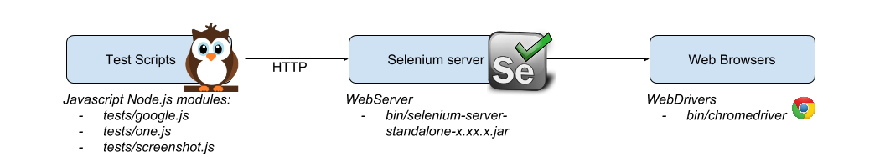
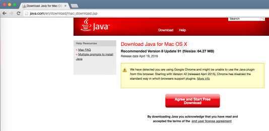
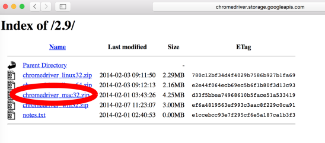
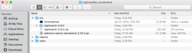
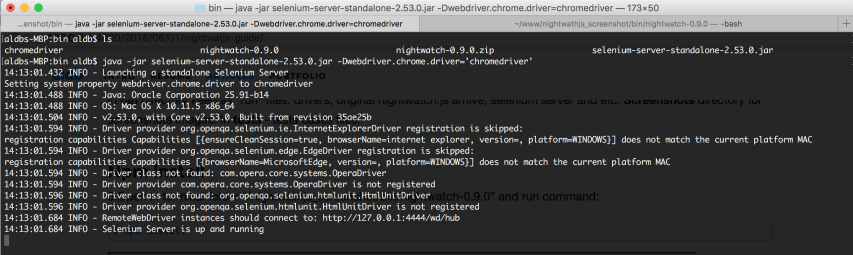
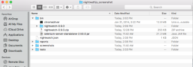

Nightwatchjs build
What|Why is Nightwatch.js?
Nightwatch.js is an easy to use Node.js based End-to-End (E2E) testing solution for browser based apps and websites. It uses the powerful Selenium WebDriver API to perform commands and assertions on DOM elements. (c) nightwatchjs.org
I used Nightwatch.js for E2E testing script modules. I really liked option quick setup environment based on Node.js + write javascript test cases + use bash scripts(Node.js/javascript) for automatization run process. In this post I make detail description how setup Nightwatch.js on OS X platform.
Overview
Nightwatch.js Goals:
- Crossbrowsers
- Easy setup writing test process(Javascript, CSS, XPath)
- Good documentation
Let’s overview logic shceme how Nightwatch works with Selenium server and Browsers:

*Tests and bin directories in example build setup.
Setup
Here details setup description step by step for Mac OS X. TODO work build:
Install/Download
1.Install/update for latest version Java

After successful installed you can verify Java version online by java applet. Also check Java SDK.
- Install/update for latest version Node.js. Check my previos post for Node.js setup.
- Download latest Selenium Standalone Server

3.Download chromedriver for your OS.

4.Download Nightwatch.js from oficial website.
Build Files structure
5.Make new project folder, for example “nightwathjs_screenshot”. Create new folders: bin, tests. Copy/paste files: Selenium standalone Server, chrome driver, nightwatch-xxx.zip in bin directory. Extract(unzip) nightwatch-xxx.zip(on example:nightwatch-0.9.0.zip)

In bin directory keep all “run” files: drivers, original nightwatch.js arhive, selenium server and etc.
Screenshots directory for screenshots images.
In tests - tests cases files.
Npm install
6.Open in terminal folder “/nightwathjs_screenshot/bin/nightwatch-0.9.0” and run command:
$ npm install
Selenium server
7.For start test cases need run Selenium server with chrome webdriver. Open “/nightwathjs_screenshot/bin/” folder in terminal and run command:
$ java -jar selenium-server-standalone-2.53.0.jar -Dwebdriver.chrome.driver='chromedriver'@selenium server run example pic.twitter.com/kT5aKXs6Yi
— Alex (@aldbpr) June 11, 2016
In terminal windows start seleneium server(“Selenium Server is up and running”), for stop this process can use “control + c”. For next steps you need open new “tab” in terminal - “control + r”.

For check Selenium server status use API url - http://localhost:4444/selenium-server/driver/?cmd=getLogMessages
Also can stop Selenium server - http://localhost:4444/selenium-server/driver/?cmd=shutDownSeleniumServer
Configuration
8.Depending upon startup point Nightwatch.js used configuration file. By default used configuration from Nightwatch.js - “nightwathjs_screenshot/bin/nightwatch-0.9.0/bin/nightwatch.json”. Let’s make new file nightwatch.json in main folder “nightwathjs_screenshot”:
{
"src_folders" : ["tests"],
"output_folder" : "reports",
"custom_commands_path" : "",
"custom_assertions_path" : "",
"page_objects_path" : "",
"globals_path" : "",
"selenium" : {
"start_process" : false,
"server_path" : "",
"log_path" : "",
"host" : "127.0.0.1",
"port" : 4444,
"cli_args" : {
"webdriver.chrome.driver" : "./bin/chromedriver"
}
},
"test_settings" : {
"default" : {
"launch_url" : "http://localhost",
"selenium_port" : 4444,
"selenium_host" : "localhost",
"silent": true,
"screenshots" : {
"enabled" : false,
"path" : ""
},
"desiredCapabilities": {
"browserName": "chrome",
"javascriptEnabled": true,
"acceptSslCerts": true
}
},
"firefox" : {
"desiredCapabilities": {
"browserName": "firefox",
"javascriptEnabled": true,
"acceptSslCerts": true
}
},
"chrome" : {
"desiredCapabilities": {
"browserName": "chrome",
"javascriptEnabled": true,
"acceptSslCerts": true
}
},
"safari" : {
"desiredCapabilities": {
"browserName": "safari",
"javascriptEnabled": true,
"acceptSslCerts": true
}
}
}
}Detail configuration documentation.
Write and run tests
9.Let’s write first test file for Nightwatch.js. It navigates to google.com and searches for nightwatch, * verifying if the term ‘The Night Watch’ exists in the search results. In “nightwathjs_screenshot/tests” folder make new file google.js:
/**
* Sample automated test scenario for Nightwatch.js
*
* > it navigates to google.com and searches for nightwatch,
* verifying if the term 'The Night Watch' exists in the search results
*/
module.exports = {
'demo test google' : function (client) {
client
.url('http://google.com')
.waitForElementPresent('body', 1000);
},
'part two' : function(client) {
client
.setValue('input[type=text]', ['nightwatch', client.Keys.ENTER])
.pause(1000)
.assert.containsText('#main', 'Night Watch')
.end();
}
};For run this test file open terminal in “nightwatchjs_screenshot” folder and use command:
$ ./bin/nightwatch-0.9.0/bin/nightwatch --test tests/google.jsWhere:
- ./bin/nightwatch-0.8.18/bin/nightwatch - path for nightwatch executable file –test - additional params, run specific test file. If in project used another version of nightwatch need update this command from “nightwatch-0.9.0” for “nightwatch-x.x.x” or folder name what used in project.
- tests/google.js - path for file
@nightwatchjs test run example pic.twitter.com/EZBGLtb3xM
— Alex (@aldbpr) June 11, 2016
Done!
Now you can write and run your test. On the end of the post can find Links for most helpfull nightwatchs resources.
Final file’s structures:

In additional you can check two my two favorite test examples:
/**
* Sample automated test scenario for Nightwatch.js
*
* > it navigates to nightwatchjs.org/api and click on API list.
* > verify Text h2 header equal clicked li element Text
*/
module.exports = {
'Test NightwatchJS.org' : function (client) {
client
.url('http://nightwatchjs.org/api')
.waitForElementVisible('body', 1000)
.elements('css selector', '#api-container ul.nav.bs-sidenav>li', function (result) {
for (var i = 0; i < result.value.length; i++) {
var id = '';
client
.elementIdClick(result.value[i].ELEMENT)
.pause(500)
.url(function(r){
id = '#' + r.value.split('#')[1]
})
.elementIdText(result.value[i].ELEMENT, function (res) {
client.expect.element(id).text.to.equal(res.value.split('\n')[0]);
});
}
})
.end();
}
};For this test case need folder “nightwathjs_screenshot/screenshots”, for save screenshot images.
/**
* Sample automated test scenario for Nightwatch.js
*
* > it navigates to google.com and make screenshot
*/
module.exports = {
'Make screenshot': function (client) {
var file = './imgs/' + Date.now() + '.png';
client
.resizeWindow(1300, 1300)
.url('http://google.com')
.waitForElementPresent('body', 1000)
.pause(1000)
.saveScreenshot(file)
.perform(function(client, done) {
console.log('Screenshot save:' + file);
// potentially other async stuff going on
// on finished, call the done callback
done();
})
.end();
}
};Links:
- Nightwatch.js - http://nightwatchjs.org
- Gitub wiki nightwatch.js - https://github.com/nightwatchjs/nightwatch/wiki
- Google group - https://groups.google.com/forum/#!forum/nightwatchjs
- Drivers for Selenium - https://selenium-release.storage.googleapis.com/index.html
- Selenium server - http://www.seleniumhq.org